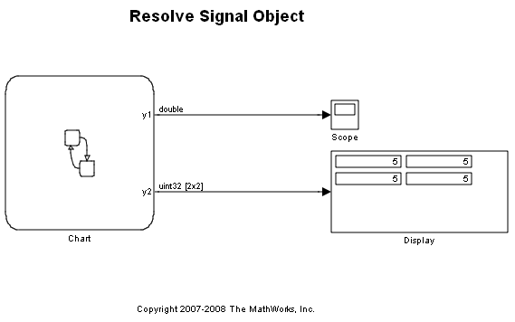
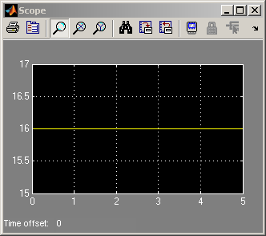

Resolve Signal Object
This demonstration shows how Stateflow® local variables and outputs can be resolved to Simulink® Signal Objects. Double click on the chart 'Signal Object Chart'. Open Model Explorer and navigate to the chart object. Notice, in the properties pane for the variables y1, y2 and local, the resolve to Simulink signal object checkbox is set. The Simulink signal objects corresponding to these variables have been setup to load automatically with the model. Look at the MATLAB® base workspace to view these signal objects which have the same name as the chart variables.
Run the simulation and notice the types on the output signals. Also note the output values in the scope and the display. Now change some of the attributes of the signal objects associated with these variables from the MATLAB prompt. Run the simulation again. Notice the types and values have changed to reflect the properties set on the Simulink signal object.
 